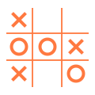

SYSTEMS
DESIGN LAB
系统设计实验室
SOUND OFF
↻
REBOOT
SYSTEMS
DESIGN LAB

✳
SDL—01
机械臂展示需要启用 WebGL
01
NEWS
新闻动态
↗
02
ABOUT THE LAB
关于实验室
↗
03
PUBLICATION
学术出版物
↗
04
PEOPLE
团队成员
↗
05
PROJECT
研究项目
↗
06
LET'S CONNECT
联系与合作
↗
INCOMING DATA
00000
SYSTEMS
DESIGN LAB
Enter
↵
To Continue
✕
ESC
SYSTEMS DESIGN LAB / EXPLORATION MODE
NEXT CONNECTION
↗
下一个连接